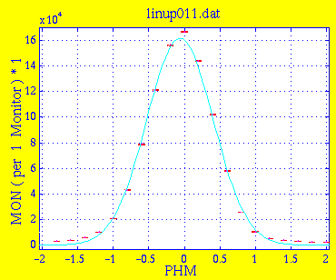
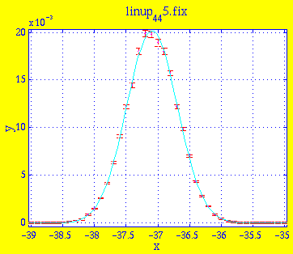
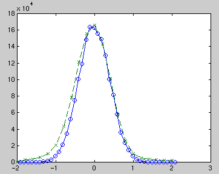

Amplitude 1.6155e+05 6.8150e+03 Centre -6.0192e-02 1.5766e-02 Width 4.6769e-01 1.2084e-02 Background -9.2264e+00 5.8797e+01 * Chi Squared 1.0685e+03Note that the peak is offset 3.6' from the center. We attribute this to a slight mis-alignment of collimator C1. This is investigated in the next simulation.

Amplitude 2.0174e-02 1.2614e-04 Centre -3.7091e+01 1.4394e-03 Width 4.0065e-01 1.5049e-03 Background -1.2596e-05 1.5895e-05 * Chi Squared 0.9153

The measured data is considerably wider than the simulated. We attribute this to an incorrect description in the simulation of the neutron channel between the cold source and the monochromator. This should be further investigated by studying drawings of the TAS1 neutron channel construction.